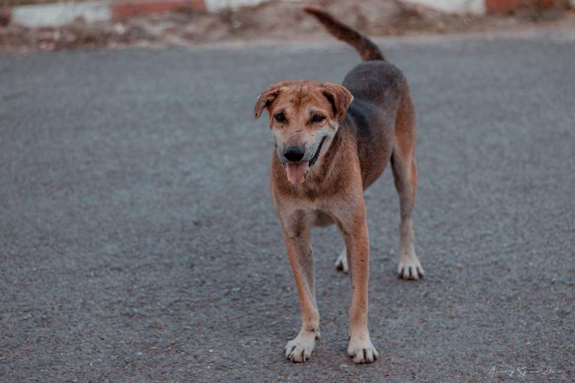
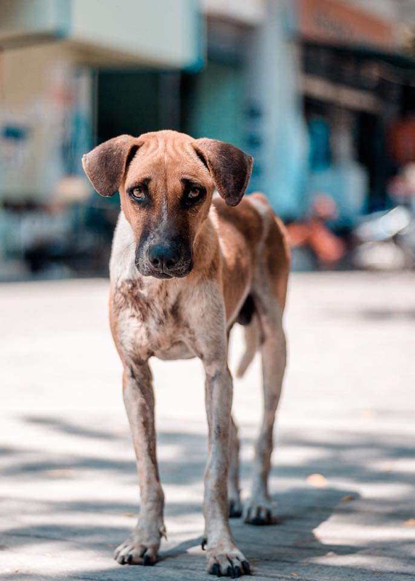

Yangon's Stray Dogs
From freedom of expression to race and gender discrimination, priple at home and abread have spoken out against human rights issues in Myanmar for years. But you rarely hear anything about animal rights. Ler�s talk about it, specifically stray
dogs in my city. Yangon is a divided city when it comes to mutts on the street.
For those who love them, these dogs are poor creatures struggling for their survival by scavenging garbage bins or using their humber-filled eyes to beg people for leftovers at roadside food stalls.
In dog lovers� eyes, the miserable canines are living beings who can feel humger, pain and fear. They food them out of sympathy and a belief that mutts have the right to live too.
But, sadly, in many cases, feeding is where the help ends. In Myanmar, bringing a stray home is a novel concept, even to those who care for them.
Plus, vaccinating and neutering the street dogs are rarely considered.
(I�ve to admit there are people who do handle everything, but they are outnumbered by those who don�t).
So, it is no surprise that the canine population has grown rapidly over the years, and that strays are now omnipresent on Yangon�s streets.
For those who don�t like them, street dogs are a threat to their safety.
Rabies is a serious concern, as Burma has the highest number of rabies-related deaths in Southeast Asia with some 1000 deaths per year.
If you are attacked by a street dog, you are on your own in most cases.
Even if you know the person who cares for the dog, you would likely be told: �I don�t own the dog. It�s a stray. I just feed it.�
The city municipal body, the Yangon city Development Committee (YCDC), had scattered poisoned meat around the city for decades to control the unruly population. But this method has largely failed because it never attracted public participation.
 Caption-animal lovers stage a protest against poisoning strays in downtown Yangon in May.
Caption-animal lovers stage a protest against poisoning strays in downtown Yangon in May.
The method is widely criticized by dog lovers as inhumane, as the victims suffer before they die. It sickens them to see dead dogs on the street with froth around their mouths. Puppies left suckling on the pavement, unaware of their mom�s
death, melt the heart of even those who think nothing of the strays otherwise. As such, dog lovers respond by hiding the mutts when they hear of mass cullings and later release them back to the streets to resume feeding and breeding. Their
efforts have contributed to an increase from some 70000 strays in 2013 to last year�s 200000.
YCDC has to stop the practice of poisoning dogs. Even though it is currently suspended, city authorized need to realize that the short-term solution doesn�t work. Animals have the right not to suffer at the hands of humans.
The municipal body should emphasize options such as vaccination and sterilization, as well as open shelters like the one it is building in Hlaing Tharyar Township that is large enough to hold up to 1000 strays.

It�s taken for granted that responsible stray dog lovers will welcome the YCDC shelter. Scheduled to open in October, it could lessen the burden that these people have taken on for years. Individuals and communities have fed, sterilized and vaccinated dogs in their neighborhoods. Some have built private shelter to hide the dogs from the danger of possible poisoning. And thanks to increased Internet connectivity, people concerned with animal rights are more connected and united than ever before.
If a stray dog is hit by a car or needs immediate medical treatment, members of the Emergency Animal Rescue Team (EART) are on call. This is all done with personal money or donations. These are the same people who sign petitions and recently staged a demonstration in front of city Hall against the poisoning of stray dogs. I really take my hat off to them.
On the other hand, I�m worried that the YCDC shelter will become a dump site for strays. Authorities should take animal welfare into consideration and not let this become a place that jails 1000 dogs grabbed from around the city.
Apart from building the shelter, the YCDC needs to carry out the vaccination and sterilization programs it has initiated. Despite logistical and financial hurdles that make it difficult for the municipal body to follow through on this, it is the only way to curb the stray population in the long run.
To make it happen, the YCDC should from an alliance with animal lovers who might be willing provide logistical and financial support, as long as the mutts they love are no longer killed. International organizations could also be asked to assist. It would also be helpful if stray dogs were welcomed into homes, but I�m not sure that will happen anytime soon.
Whatever the answer is, we need to respect life. Even a stray dog shouldn�t suffer mistreatment at our hands. I believe this as someone who has been sheltering, feeding, vaccinating and sterilizing seven pariah mutts for years.
Source- The Ayeyarwaddy
Copyright ©
All rights reserved | This template is made with by Colorlib